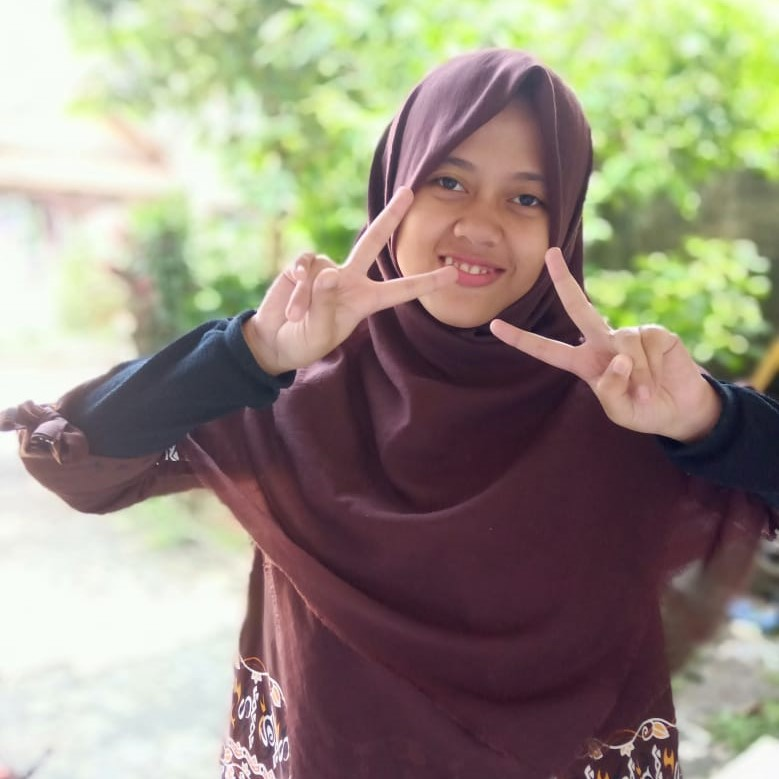
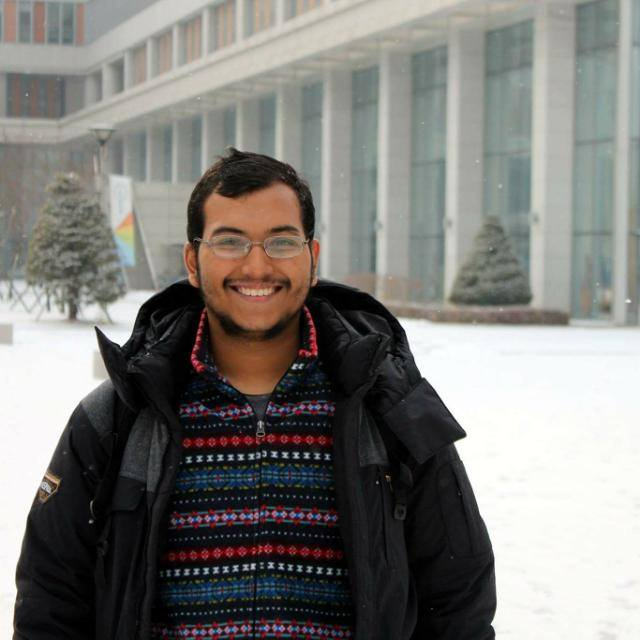

Are Getting Married
on July 28, 2019 — Pasar Minggu, Jakarta

Wilujeng Laksmi
Bride

28.07.2019
on July 28, 2019 — Pasar Minggu, Jakarta


Pada dasarnya saya tidak banyak berbicara dan bercerita. Hanya kepada sebagian orang, yang saya nyaman kepadanya, atau orang tersebut menunjukkan antusiasme terhadap cerita saya, barulah saya bisa bercerita banyak. Ajeng memenuhi kedua kriteria tersebut. Ditambah lagi, kami memiliki cukup banyak kemiripan walau di hal-hal sepele seperti hobi dan selera humor. Momen-momen mengobrol bersama Ajeng selalu menjadi momen yang saya nantikan. Selalu menyenangkan rasanya berbicara dengannya. Saya sering membayangkan, ingin menjalani hidup bersama orang yang seperti itu. Sayangnya saya tidak segera menyadari perasaan tersebut.
Perlu waktu cukup lama bagi saya untuk menyadari perasaan saya kepada Ajeng. Ternyata yang saya cari, sudah berada tak jauh dari saya. Segera setelah memahami perasaan tersebut, saya mencoba memantapkan hati. Berdoa, meminta petunjuk kepada Yang Maha Mengetahui. Saya pun memahami bahwa mencari pasangan hidup, tidak sekedar mencari teman ngobrol saja. Pasangan hidup tersebut akan menjadi partner saya dalam melakukan ibadah terpanjang dalam hidup saya, in syaa Allah. Oleh karena itu, saya pun memulai usaha untuk mengenal Ajeng lebih jauh.
Hasil dari proses mengenal tersebut jauh melebihi ekspektasi saya. Ajeng lebih dari sekedar teman mengobrol yang asik. Ajeng memiliki pengetahuan agama yang baik, cita-cita yang mulia, visi hidup yang sejalan dengan saya, sifat yang lembut, dan banyak lagi hal lainnya yang membuat saya merasa mantap untuk melanjutkan ke jenjang yang lebih serius. Pilihan ini merupakan pilihan yang saya sandarkan keputusannya, baik-tidaknya, kepada Allah. Saya yakin, Allah akan halangi jika keputusan yang saya ambil buruk bagi saya, dan Allah akan mudahkan jika keputusan tersebut baik bagi saya. Maasyaa Allah, banyak sekali kemudahan yang Allah berikan dalam ikhtiar saya untuk menuju pernikahan dengan Ajeng. Begitu pula rasa tenang dan yakin yang terus menerus ada dalam hati saya. Dua hal yang tidak saya rasakan dalam ikhtiar-ikhtiar saya sebelumnya.
In syaa Allah, bersama Ajeng, usaha mencapai Jannah-Nya menjadi lebih menyenangkan dan bermakna
Semoga Allah mampukan kami untuk mencapai Jannah-Nya
— Luqman —
Saya pernah membayangkan diri saya menikah di usia muda. Namun meski sudah pernah dibayangkan, mendapat ajakan dari seorang laki-laki untuk berproses menuju pernikahan, seperti mendapat kejutan di hari yang bukan ulang tahunmu atau seperti hujan di tengah kemarau panjang. Namun lagi, betapapun mengejutkannya, hujan di kemarau panjang selalu saja menyejukkan. Serta mendapatkan kejutan meski di hari yang salah, tetap saja menyenangkan.
Bicara mengenai perkenalan, saya tidak sebaik itu mengenal seorang Luqman Sungkar. Hanya sebagian kecil saja, dari yang terlihat sehari-hari. Saya hanya mengetahui beberapa cerita di masa lalunya. Tentang hewan kecil yang berenang di tempat penyimpanan air milik sekolahnya. Tentang seorang anak laki-laki yang berangan menjadi astronot. Tentang mimpi-mimpi besarnya yang begitu mulia –semoga Allah swt memampukannya.
Salah satu bagian terbaik dari mengenalnya adalah, bagaimana ia berinteraksi dengan ketiga adiknya, bagaimana sikap santunnya kepada sang ibu, dan betapa ia mengidolakan ayahnya.
Bila menikah butuh proses pengenalan yang lama, maka saya tidak akan siap menikah dengannya. Tidak saat ini, tidak di hari-hari berikutnya. Namun saya percaya, bahwa pernikahan adalah belajar menerima seluas-luasnya. Sehingga seluruh informasi tidak esensial yang diketahui sebelumnya, menjadi tak begitu bermakna.
Menerima lamarannya adalah sebuah keberanian yang tidak saya duga bisa saya lakukan. Sekaligus menghadirkan perasaan yang hangat dan tenang. Alasannya begitu sederhana dan tidak dibuat-buat : Sebab dialah orangnya. Meski konon pernikahan itu berat, setidaknya saya bersyukur: kelak di sepanjang perjalanan, saya punya teman bercerita yang paling menyenangkan yang pernah saya temui. Semoga Allah swt senantiasa meridhoi perjalanan kami.
Bila pernikahan adalah ibadah
Maka bersama dengannya tak akan pernah sia-sia
Maka bersama dengannya, insyaAllah kami melangkah sedikit lebih dekat kepada-Nya.
— Ajeng —
Pertama kali Ajeng bekerja di Flip. Saat itu Ajeng dan Luqman belum begitu menyadari kehadiran satu sama lain. Tidak ada kesan yang istimewa, semua interaksi dan pembicaraan dilakukan dalam konteks pekerjaan.
Awal Februari, niat untuk membuka hubungan yang lebih serius membawa Luqman berinteraksi dan berbincang lebih jauh dengan Ajeng. Sedangkan Ajeng sendiri mendapati Luqman sebagai lawan bicara yang menyenangkan. Ajeng tertarik dengan semua cerita dan ide-ide diskusi yang Luqman berikan. Mereka memiliki ketertarikan yang sama pada buku, film, dan beberapa kegiatan di samping pekerjaan. Dalam masa ini, Luqman mengumpulkan keberanian untuk mengajukan sebuah pertanyaan penting. Sedangkan Ajeng berusaha menata hati agar tak jatuh hati terlebih dahulu.
Kecocokkan satu sama lain, dukungan orang tua, serta do’a-do’a yang menguatkan keyakinan, membuat Luqman memberanikan diri untuk menanyakan keinginannya untuk melakukan proses menuju pernikahan dengan Ajeng. Permintaan yang datang tiba-tiba tersebut akhirnya dijawab Ajeng satu pekan kemudian. Proses dilanjutkan dengan didampingi murabbi masing-masing.
Di pertengahan Ramadhan, Ajeng dan Luqman didampingi murabbi masing-masing melakukan nazhar pertama, di kantor salah satu murabbi mereka. Pertemuan tersebut sangat singkat. Hanya ada beberapa pertanyaan penting dan mendasar yang ditanyakan. Keesokan harinya, kedua belah pihak menyatakan kesediaannya untuk melanjutkan proses.
Tepat satu bulan setelah Luqman bertanya pada Ajeng mengenai niatnya, ia datang seorang diri ke rumah Ajeng. Hari itu adalah pertama kali Luqman menjabat tangan seorang ayah dari perempuan yang insyaAllah akan ia nikahi. Di hari itu, Luqman memperkenalkan dirinya secara langsung di depan keluarga Ajeng. Kedatangannya disambut dengan hangat, orang tua Ajeng sepenuhnya menerima kehadiran Luqman.
Orang tua Luqman datang ke rumah Ajeng. Ketika itu, dimulailah pembicaraan mengenai khitbah dan pernikahan. Restu kedua belah pihak orang tua telah mengiringi. Tak hanya Ajeng dan Luqman, kedua orang tua mereka tengah mempersiapkan diterimanya anggota keluarga baru yang terjalin lewat pernikahan putra dan putrinya.
Tepat dua bulan setelah proses pertama dari rangkaian ta’aruf, Luqman dan beberapa perwakilan keluarga besarnya, datang ke rumah salah satu bude Ajeng. Hari itu, diwakilkan seorang perantara, Luqman melamar Ajeng di hadapan keluarga besarnya. Kedua keluarga saling menyambut dengan bahagia dan suka cita. Tinggal menghitung hari sebelum hari pernikahan tiba.